Nájdite parcelu
Ťuknutím do mapy alebo podľa katastrálneho územia a čísla – registra C aj E. Parcela sa ukáže celá s výmerou a hranicami.
Skutočné údaje katastra · Brezno – Zadné Halny
Parcelko ukáže hranice parciel registra C aj E, lesné porasty, vlastníkov z listu vlastníctva a vašu polohu priamo na pozemku. Stačí ťuknúť na parcelu – dĺžky strán, výmeru, obvod aj súradnice lomových bodov máte hneď, bez merania. Mapy a parcely si vopred stiahnete – v lese bez signálu ich máte stále.
Toto je živá mapa – ťuknite na parcelu a hneď uvidíte jej rozmery (v aplikácii aj súradnice lomových bodov).
Parcely © ÚGKK SR (INSPIRE, CC BY 4.0) · Lesné porasty a porastová mapa © NLC Zvolen · Ortofoto © GKÚ Bratislava, NLC · Terén: Mapzen, SRTM, EU-DEM © Copernicus
Nič nemerajte – ťuknite na parcelu. Dĺžky strán, výmera, obvod aj súradnice lomových bodov v S-JTSK sú hneď na displeji, ako v geometrickom pláne. Presne ich exportujete v súradniciach S-JTSK, JTSK03, WGS84 aj UTM – ako KMZ a KML (Google Earth), GPX (GPS prístroje), GeoJSON (GIS), DXF (CAD), CSV (Excel) či TXT.
Funkcie
Ťuknutím do mapy alebo podľa katastrálneho územia a čísla – registra C aj E. Parcela sa ukáže celá s výmerou a hranicami.
Vaša poloha z GPS priamo na mape: aplikácia povie, či stojíte na pozemku, ako ďaleko je hranica a s akou presnosťou.
Parcely C aj E, lesné porasty, vaše vlastné parcely a vlastníci z listu vlastníctva – všetko naraz, presne na sebe.
Farebná porastová mapa s číslami dielcov a hranice porastov spolu s parcelami C a E – v lese hneď viete, kde ste aj čie to je.
Ortofoto, katastrálna mapa, mapa určeného operátu, základná mapa ZBGIS, tieňovaný reliéf a porastová mapa – prepnete jedným ťuknutím.
Mapa cez celý displej bez ponúk, naklonený pohľad a mapa sa otvorí tam, kde ste skončili.
Nemusíte nič merať: ťuknete na parcelu a hneď máte dĺžku každej strany medzi lomovými bodmi, výmeru, obvod aj súradnice bodov v S-JTSK. Výmera v rovine S-JTSK sedí s katastrom – napr. 3 565,38 m² pri výmere 3 565 m².
Ťukajte do mapy: dĺžka trasy alebo obsah a obvod plochy sa počítajú hneď. Bod chytíte a posuniete – obsah, obvod aj dĺžky strán sa okamžite prepočítajú. Body vložíte, zmažete, kroky vrátite späť a zámkom ich chránite pred náhodným posunom.
Obídete pozemok a aplikácia sama zaznamenáva body z GPS – priebežne počíta prejdenú dĺžku, obvod aj obsah. Meranie môžete pozastaviť.
Bod zapíšete priamo z polohy, presnejšie s priemerovaním. Externý GPS prijímač (napr. RTK) pripojíte cez simulovanú polohu Androidu.
Dlhým stlačením mapy súradnice v S-JTSK, JTSK03, WGS84 a UTM a výška nad morom (Bpv). Pri parcele zoznam všetkých lomových bodov v S-JTSK na skopírovanie.
Ťuknutím alebo rámikom vyberiete viac parciel naraz – aplikácia spočíta ich celkovú výmeru.
Zlúčené parcely, merania a body si uložíte do vlastných vrstiev s menom, farbou a výplňou – napr. „Moje lesy“, „Urbár“, „Na predaj“.
Načítate parcely a body z Google Earth, GPS prístrojov alebo od geodeta – aj viac súborov naraz, so štýlmi.
Číslované body s poznámkou a fotkami s polohou – hraničníky, poškodenia, stromy na ťažbu. Každá fotka dostane odtlačok SHA-256, ktorým sa dá neskôr preukázať, že sa nezmenila.
Výpis otvoríte na oficiálnom portáli katastra priamo v aplikácii – stiahnuté PDF sa načíta samo: vlastníci, podiely a ťarchy sú pri parcele.
Rámikom si vyznačíte výsek mapy podľa seba – od pár parciel po celý chotár, les či obec – a stiahnete ho: mapy, parcely aj lesy. Území môžete mať, koľko potrebujete, a v teréne bez signálu všetko funguje.
Stiahnuté územie pošlete kolegovi jedným súborom – bez nového sťahovania.
KMZ (aj s fotkami), KML, GPX, GeoJSON, DXF pre CAD, CSV pre Excel a TXT – so súradnicami v S-JTSK, JTSK03, WGS84 alebo UTM.
Les a ťažba
V lesoch je veľa parciel registra E, ktoré patria iným vlastníkom než lesný celok okolo. Parcelko ukáže naraz hranice lesných porastov NLC, parcely C aj E a vašu polohu z GPS. Pri ťažbe tak hneď vidíte, či porast, v ktorom pracujete, nezasahuje do cudzej parcely – a vlastníka si overíte z listu vlastníctva.
Orientačne podľa údajov katastra a NLC – hranice v teréne vytyčuje geodet.
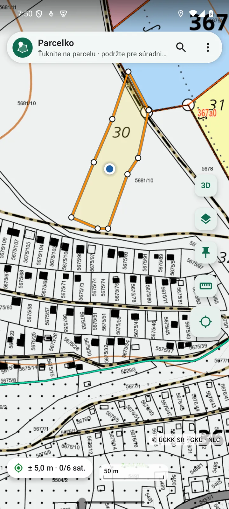
Rozdiel na prvý pohľad
Vľavo samotná porastová mapa NLC, ako ju poznáte. Vpravo to isté miesto v Parcelku so zapnutými parcelami registra C (čierne), registra E (zelené) a hranicami porastov – hneď vidíte, koľko pozemkov a vlastníkov je v lese a pri obci. Potiahnite posúvač.
Brezno – Zadné Halny, skutočné obrazovky aplikácie.
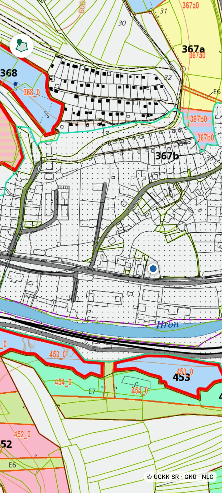
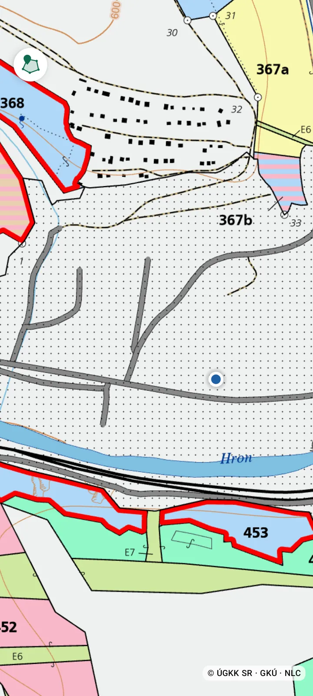
len lesná mapa+ parcely C a EPre koho
Porasty, parcely E v lese, body ťažby s fotkami, offline mapy celého lesného celku a prenos územia na mobily kolegov.
Nájdite parcelu a zistite výmeru, obvod aj dĺžku každej strany medzi lomovými bodmi – ako v geometrickom pláne. K tomu vlastníkov z listu vlastníctva, body s fotkami a pre klienta KMZ alebo PDF z katastra.
Zdedili ste les, lúku či záhradu a neviete, kde presne sú? Zadajte čísla parciel z dedičského rozhodnutia alebo listu vlastníctva – Parcelko ich ukáže na mape, označíte si ich ako svoje a polohou vás navedie až na pozemok.
Bez hraníc v teréne sa ťažko hľadá. Na mape vidíte parcelu aj svoju polohu a aplikácia povie, či už ste na pozemku.
Pred kúpou si prejdite hranice v teréne, zmerajte plochu a porovnajte ju s výmerou v katastri.
V mobile
Skutočné obrazovky aplikácie – Brezno, Zadné Halny. Ukážky sa posúvajú samy, môžete ich posúvať aj vy.
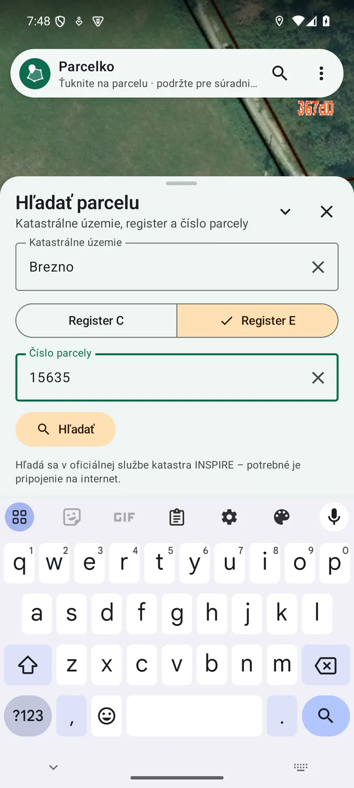
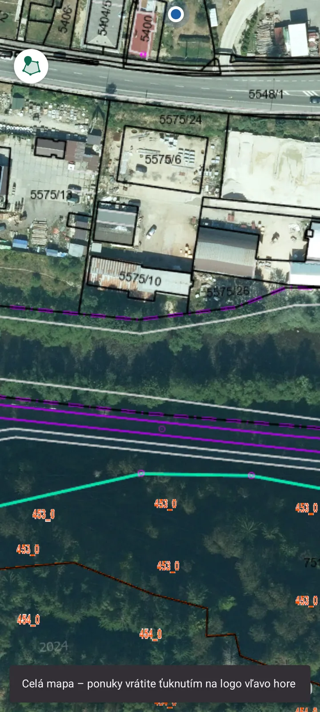
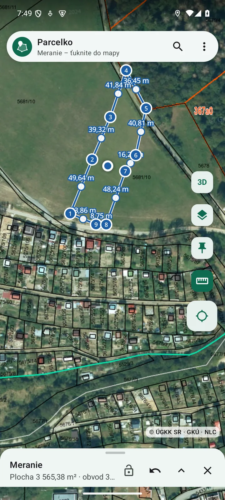
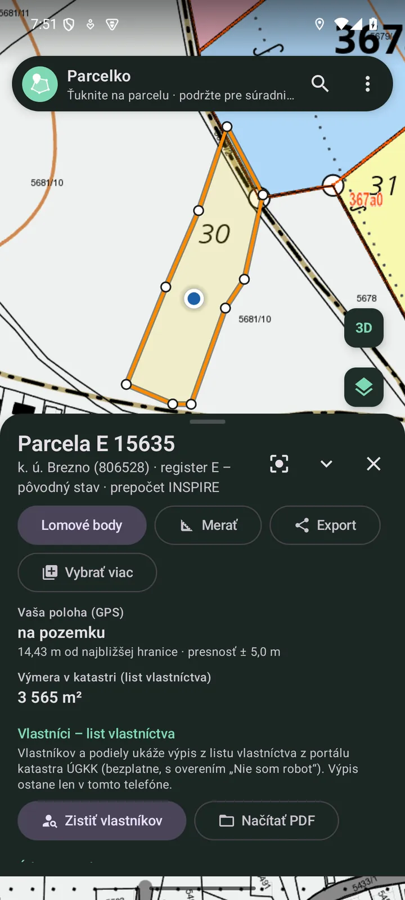
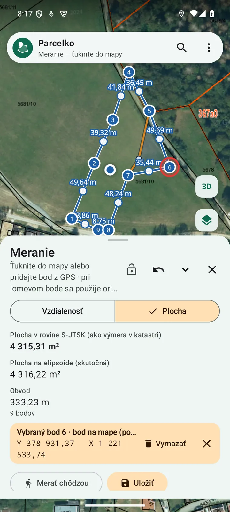
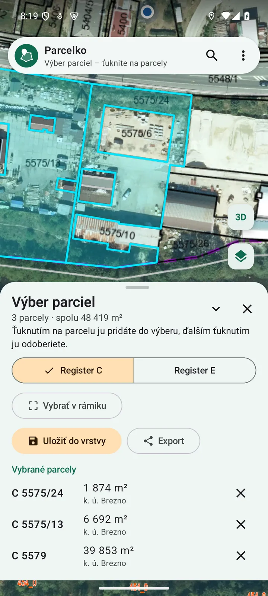
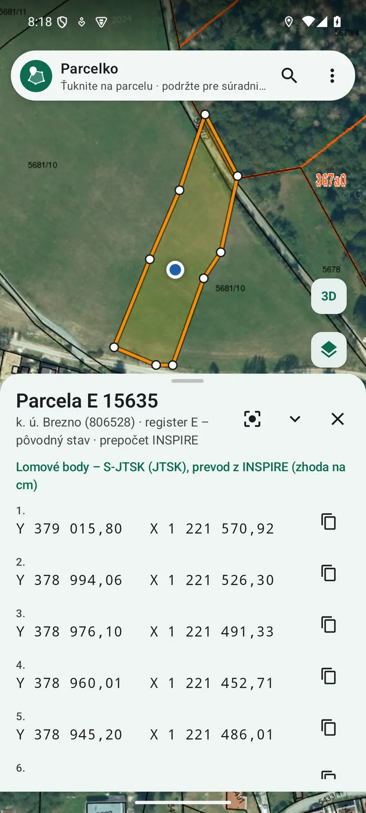
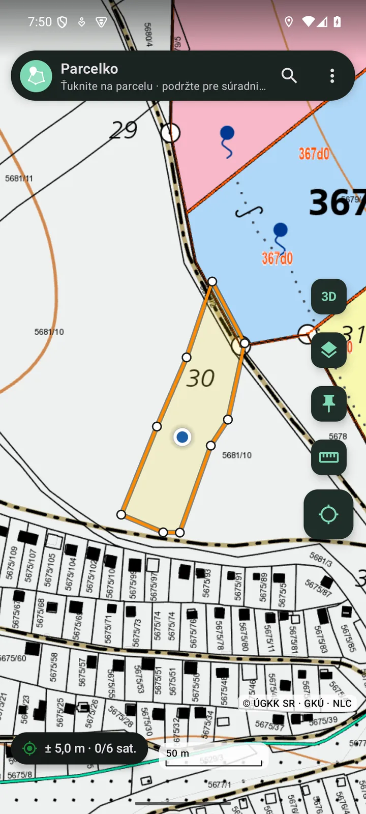
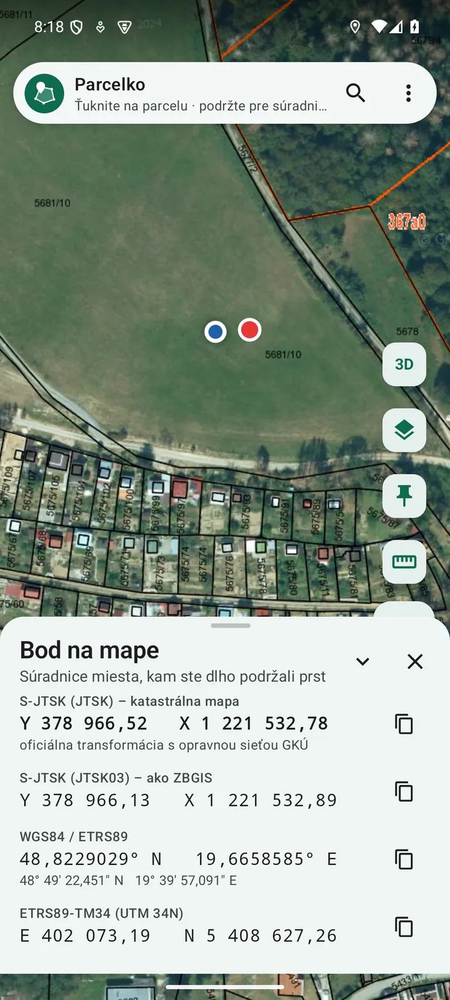
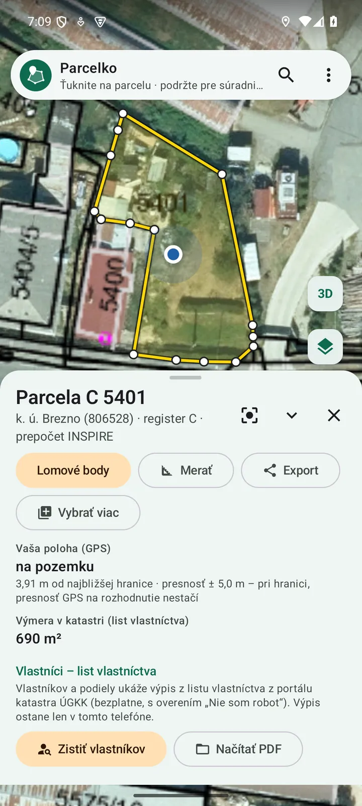
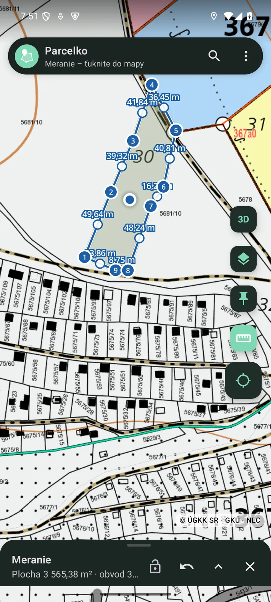
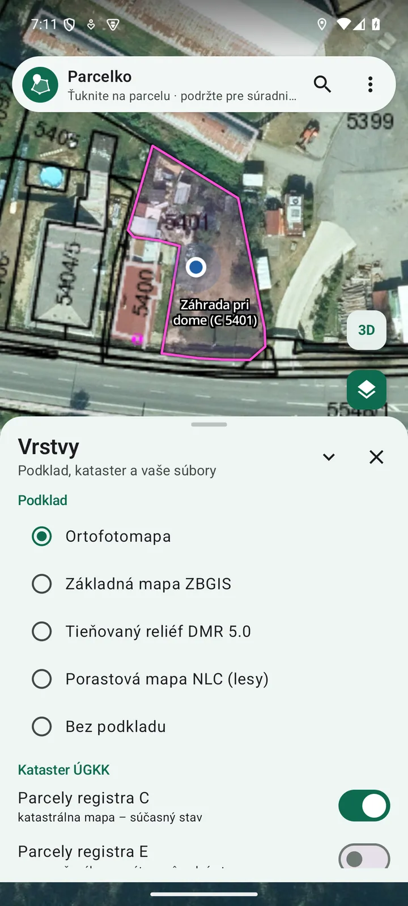
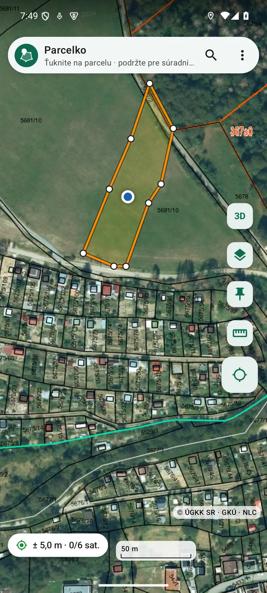
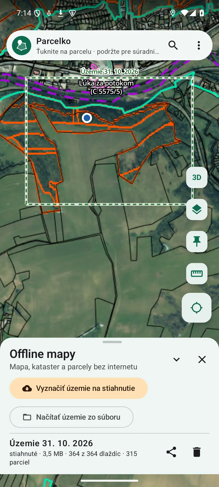
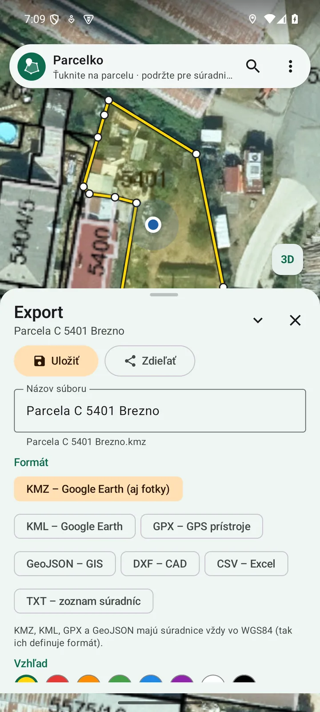
List vlastníctva
Z panelu parcely otvoríte oficiálny katastrálny portál ÚGKK s predvyplneným územím a číslom parcely. Výpis z listu vlastníctva, ktorý si na portáli stiahnete, sa v aplikácii načíta sám: vlastníci, podiely a ťarchy sú hneď pri parcele – aj offline. Pri starom výpise vás aplikácia upozorní.
Výpisy ostávajú len vo vašom mobile. Údaje katastra majú informatívny charakter.
LV č. 1234 · k. ú. Ukážkovo ilustrácia
Parcela C 512/3 · záhrada · 812 m²
Výpis stiahnutý 31. 10. 2026 · ťarchy: bez zápisu
Presnosť
Súradnice lomových bodov sa prevádzajú oficiálnym postupom ÚGKK – 7-parametrová transformácia ETRS89 ⇄ JTSK03 a opravná sieť JTSK03 ⇄ JTSK. Prevod je overený voči serveru katastra na 12 miestach Slovenska s odchýlkou najviac 6 milimetrov (0,006 m). Presnosť polohy z GPS mobilu je iná vec – spravidla 2 až 10 metrov. Výmera sa počíta v rovine S-JTSK rovnako ako v katastri, plocha na elipsoide je uvedená samostatne.
Parcelko nie je oficiálnou aplikáciou ÚGKK SR ani GKÚ. Údaje katastra majú informatívny charakter (§ 68 ods. 4 zákona č. 162/1995 Z. z.) a aplikácia nie je určená na vytyčovanie hraníc – to robí oprávnený geodet.
Cenník
Licencia pre jeden mobil, bez automatického predlžovania. Platí odo dňa vydania. Ceny sú konečné.
4,90 €
7 dní
Nájdete svoju parcelu v lese či na lúke, prezriete pozemok pred kúpou.
9,90 €
30 dní
Na projekt, predaj nehnuteľnosti alebo jednu sezónu prác.
34,90 €
182 dní · 5,82 € mesačne
Celá sezóna ťažby alebo poľnohospodárskych prác.
49,90 €
365 dní · 4,16 € mesačne
Pre lesníkov, urbariáty, maklérov a všetkých, ktorí sú v teréne často.
Firmy, urbariáty a spoločenstvá: od 3 mobilov zľava 20 %, faktúra – napíšte nám.
Ako začať
Vždy najnovšia verzia (súbor Parcelko.apk, približne 58 MB). Nové verzie aplikácia oznámi sama. iPhone zatiaľ nepodporujeme.
Otázky
Áno. Vyznačte územie a stiahnite si mapy aj parcely vopred – v lese bez signálu potom vidíte hranice, čísla parciel, výmery aj svoju polohu. Bez internetu nefunguje len hľadanie v oblastiach, ktoré nemáte stiahnuté, a portál katastra.
Súradnice lomových bodov zodpovedajú katastrálnej mape – prevod súradníc je overený s odchýlkou najviac 6 milimetrov (0,006 m) a výmera sa počíta rovnako ako v katastri. Presnosť polohy z GPS mobilu je spravidla 2 až 10 metrov. Na vytýčenie hraníc v teréne potrebujete geodeta.
Nie. Parcelko vyvíja slovenská firma LUBERIT s. r. o.
Licencia je viazaná na jeden mobil. Pri výmene nám pošlite nový kód zariadenia a pošleme nový aktivačný odkaz. Vrstvy a merania si prenesiete exportom (KMZ), stiahnuté územie tlačidlom „Poslať“.
Nie. Všetko, čo v aplikácii vytvoríte – parcely, merania, fotky, výpisy – je len vo vašom mobile. Podrobnosti v zásadách ochrany osobných údajov.
Kontakt
Napíšte nám – pošleme licenciu, faktúru pre firmu či urbariát, alebo poradíme s parcelou. Odpovedáme spravidla do 24 hodín.
Kód zariadenia ukáže aplikácia po spustení (alebo v ponuke O aplikácii) – stačí ho skopírovať do správy.